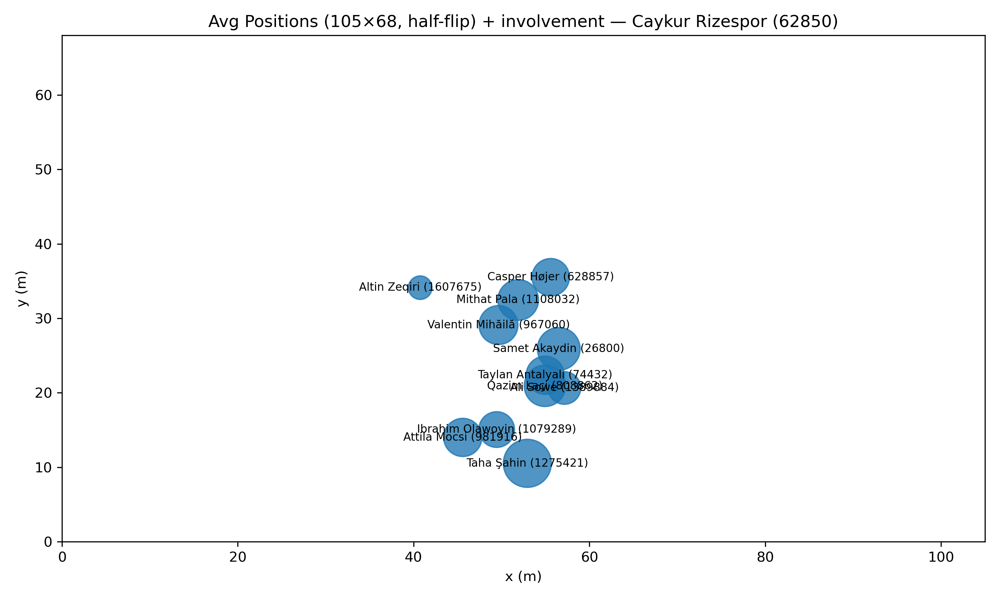
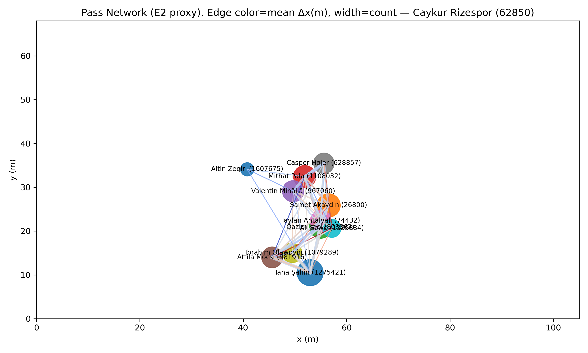
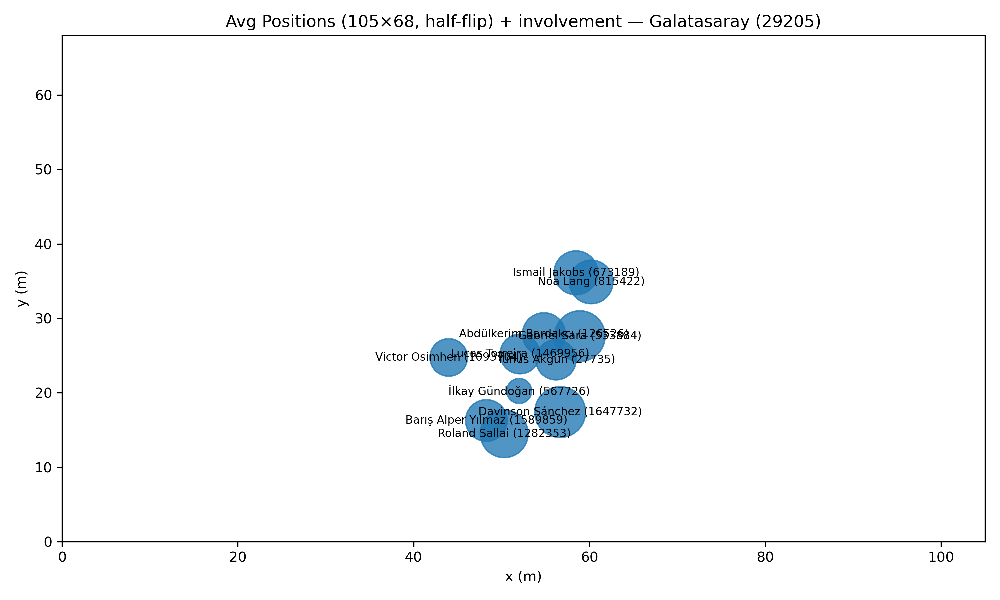
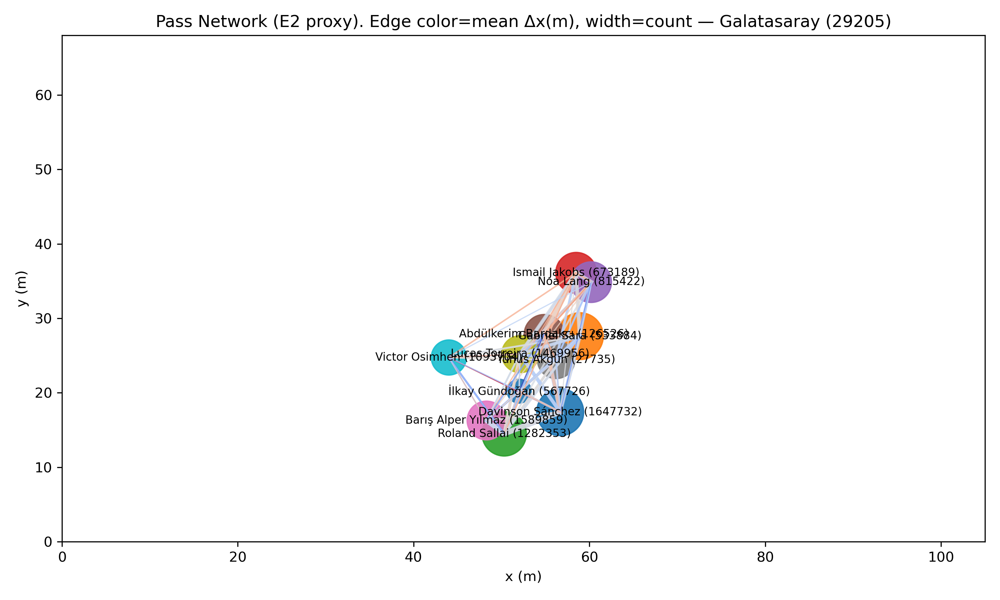
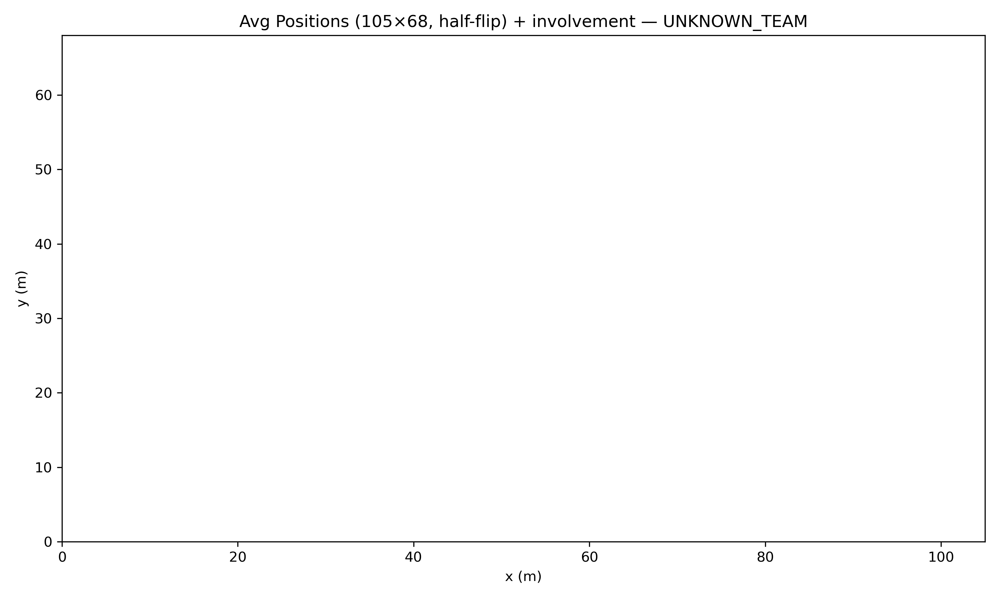

HPFA passnet_105x68_v2 — 105×68 + 2nd-half flip
Fix:
coordinates forced to 105×68; half==2 uses x = 105 - x. Network is E2 sequence proxy.
Avg positions + involvement — Caykur Rizespor (62850)

Pass network (Δx color, count width) — Caykur Rizespor (62850)

Avg positions + involvement — Galatasaray (29205)

Pass network (Δx color, count width) — Galatasaray (29205)

Avg positions + involvement — UNKNOWN_TEAM
